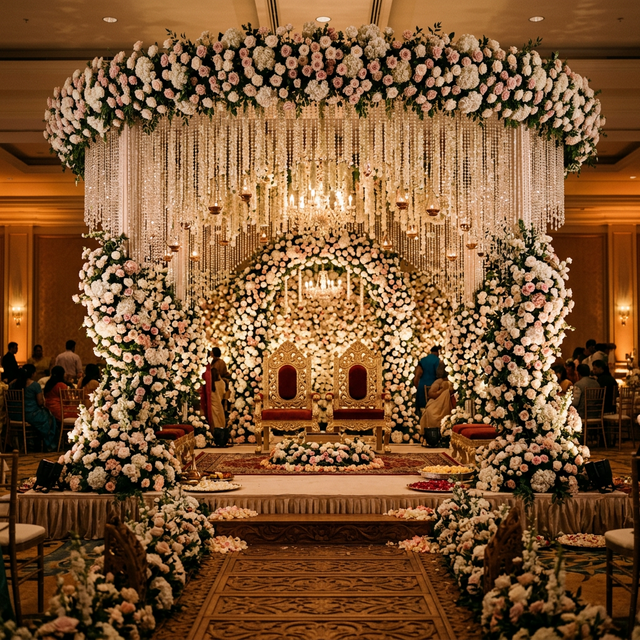

Wedding Stage Decoration in Trichy
Luxury floral stage designs by VKS Decorations in Tiruchirappalli
Luxury floral stage designs by VKS Decorations in Tiruchirappalli
Your wedding stage is the centrepiece of your celebration — the backdrop against which some of life's most precious moments unfold. At VKS Decorations, we specialise in creating luxury wedding stage designs in Trichy that reflect your unique style and cultural heritage, turning ordinary venues into extraordinary experiences.
With over 12 years of experience and more than 500 weddings decorated across Tamil Nadu, our team of skilled artisans understands the art of blending traditional South Indian wedding aesthetics with contemporary luxury design. Every stage we create is a masterpiece, crafted with fresh premium flowers, elegant drapery, sophisticated lighting, and meticulous attention to detail.



We offer a diverse range of wedding stage decoration styles to suit every taste and budget. Whether you envision a grand royal palace setup or a minimalist modern design, our team will bring your vision to life.
We are not just decorators — we are artisans who understand that every wedding is a once-in-a-lifetime celebration. Here is what sets us apart from other wedding stage decorators in Trichy:
Our streamlined process ensures a stress-free experience from consultation to the grand reveal:
Wedding stage decoration in Trichy typically ranges from Rs 80,000 to Rs 5,00,000+ depending on the design complexity, flower selection, and venue size. VKS Wedding Decorations offers customised packages for every budget. Visit our pricing page for detailed tier information.
We recommend booking at least 2-3 months before your wedding date to ensure availability, especially during peak wedding season in Tamil Nadu (April-June, November-January). For premium designs, booking 3-4 months in advance is ideal.
Yes, VKS Decorations serves Trichy and surrounding districts including Thanjavur, Pudukottai, Karur, Perambalur, and Ariyalur. Transport charges may apply based on distance.
We use premium fresh flowers including jasmine, roses, orchids, carnations, marigolds, and imported varieties. All flowers are hand-selected on the day of the event to ensure freshness and vibrancy throughout your celebration.
Check date availability and secure your premium wedding stage decoration in Trichy.